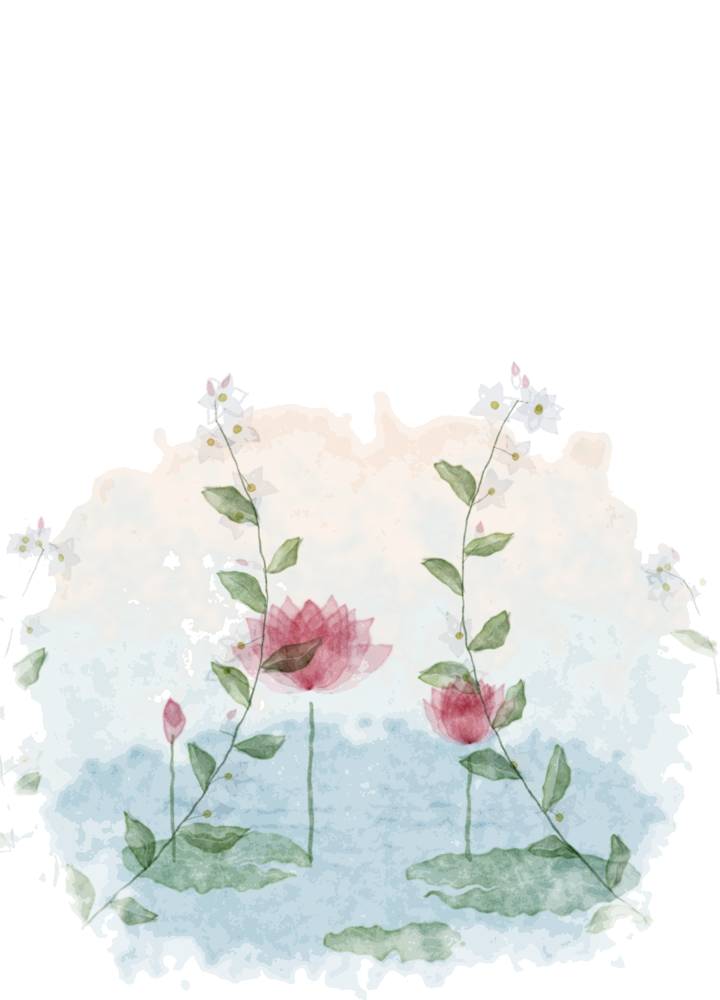
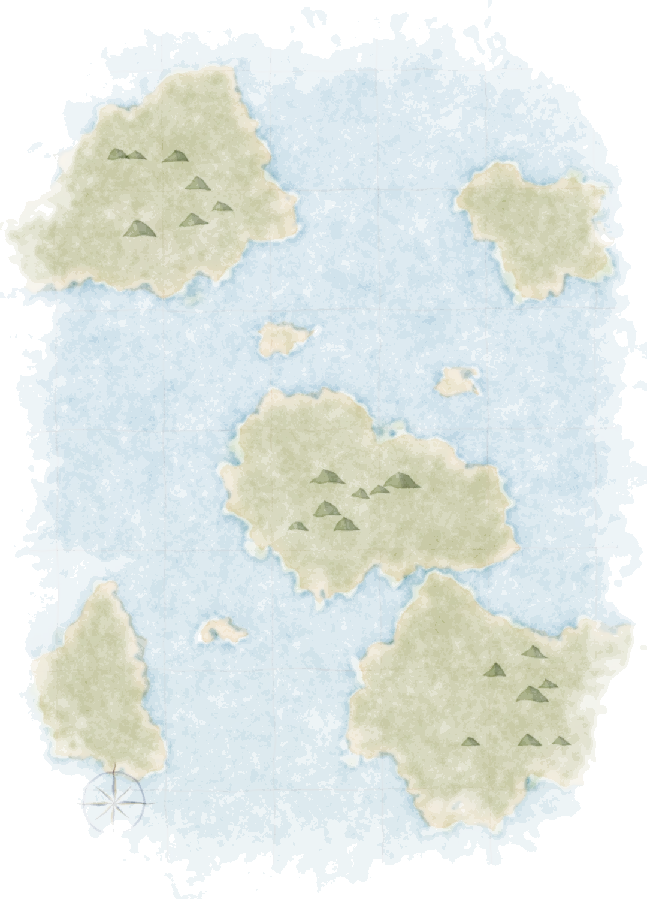
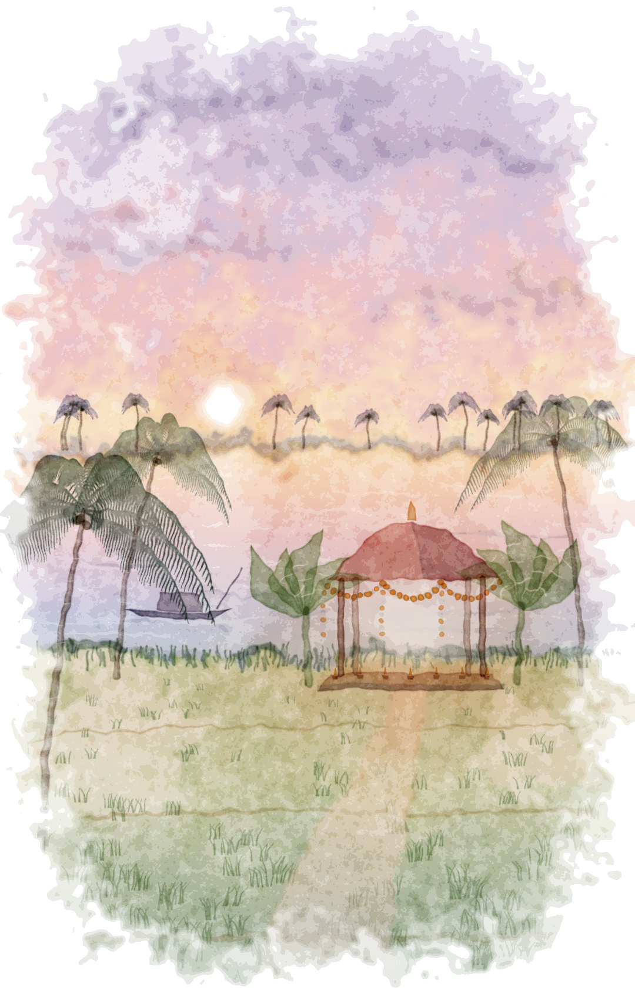
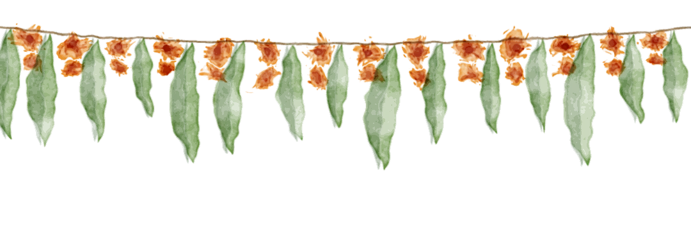
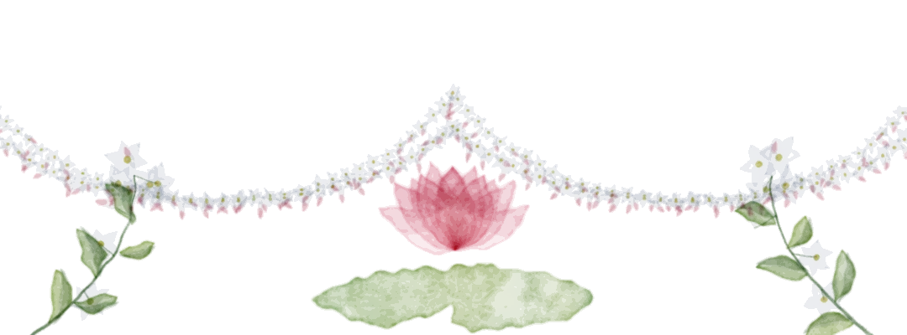
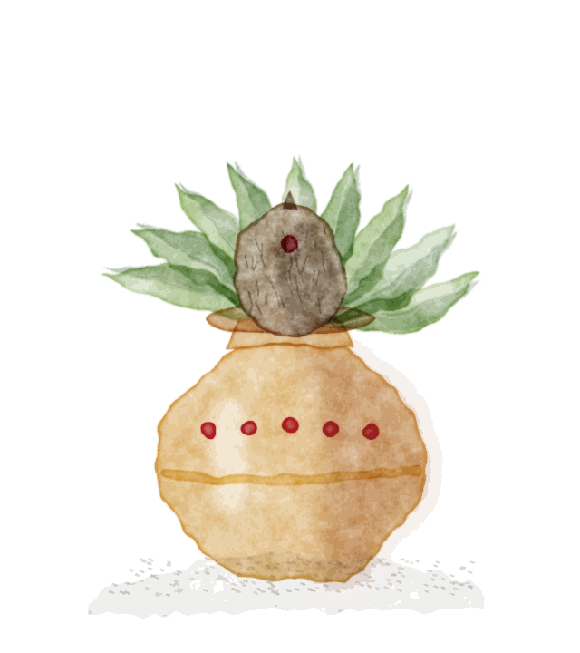
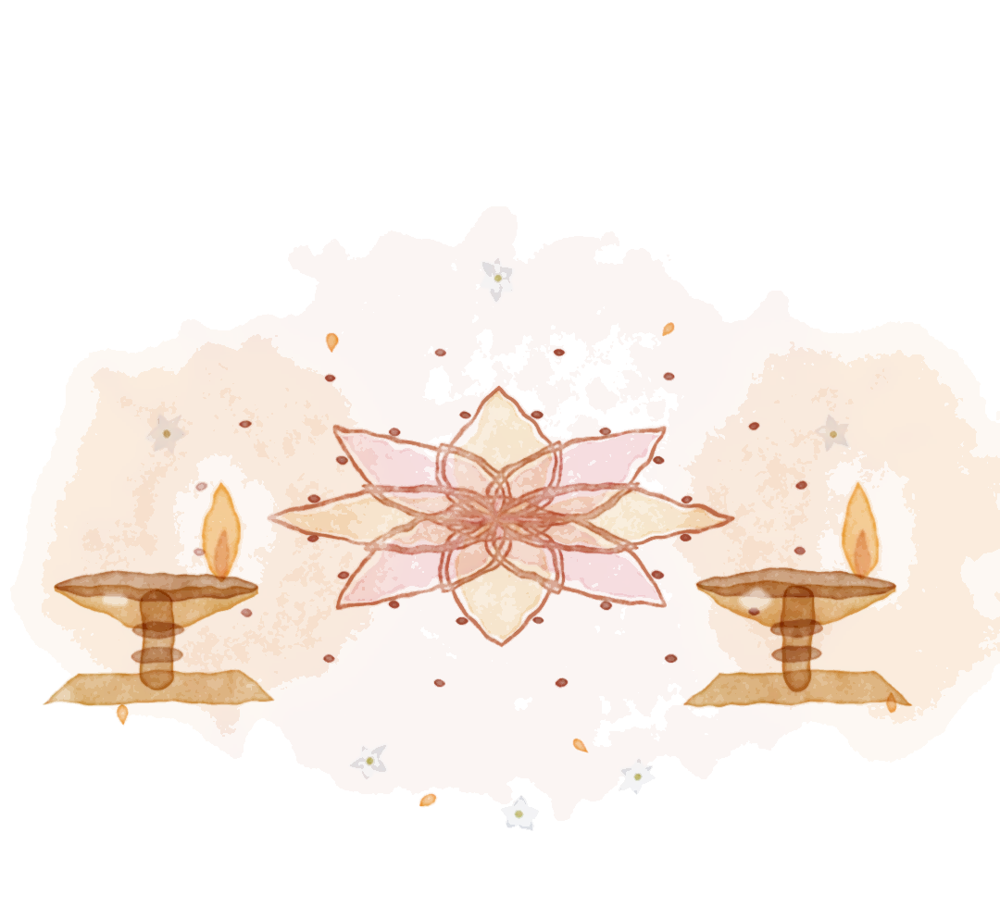

A painted invitation
The Atlas of Us
Akshay & Priya
Two souls. Two journeys. One destination.


Symbolic journeys on an imaginary map
Chapter one · Two souls
Two travellers, each with a horizon of their own.
Each followed a path in their own colour, across their own seas, long before the roads met.
- One journey
- Another journey
Chapter two · The connection
Where the two paths met, the colours ran together.
On wet paper, rose and blue do not stay apart. They bloom into a new colour, and the painting becomes one.

Chapter three · The destination
And every road led here.
Nallajerla, Andhra Pradesh
Two journeys arrive at one celebration, under one mandapam.

శుభ వివాహం
With the blessings of our families,
we joyfully invite you to celebrate the wedding of
Akshay & Priya
Saturday 21 November 2026
- Wedding dinner
- 8:00 PM IST
- Wedding muhurtham
- 9:55 PM IST
Priyanka Convention
Nallajerla, Andhra Pradesh, India


Wedding details
The evening of Saturday, 21 November 2026
- 8:00 PM IST Wedding dinner
- 9:55 PM IST Wedding muhurtham
Priyanka Convention
Nallajerla, Andhra Pradesh, India
Search venue on Google MapsThis opens a map search for the venue name. The exact pin is still to be confirmed.
Until the wedding dinner
– days– hours– minutes
With love
Two journeys have found one road.
Come and walk its first steps with us.

Akshay & Priya
21 · 11 · 2026 · Nallajerla